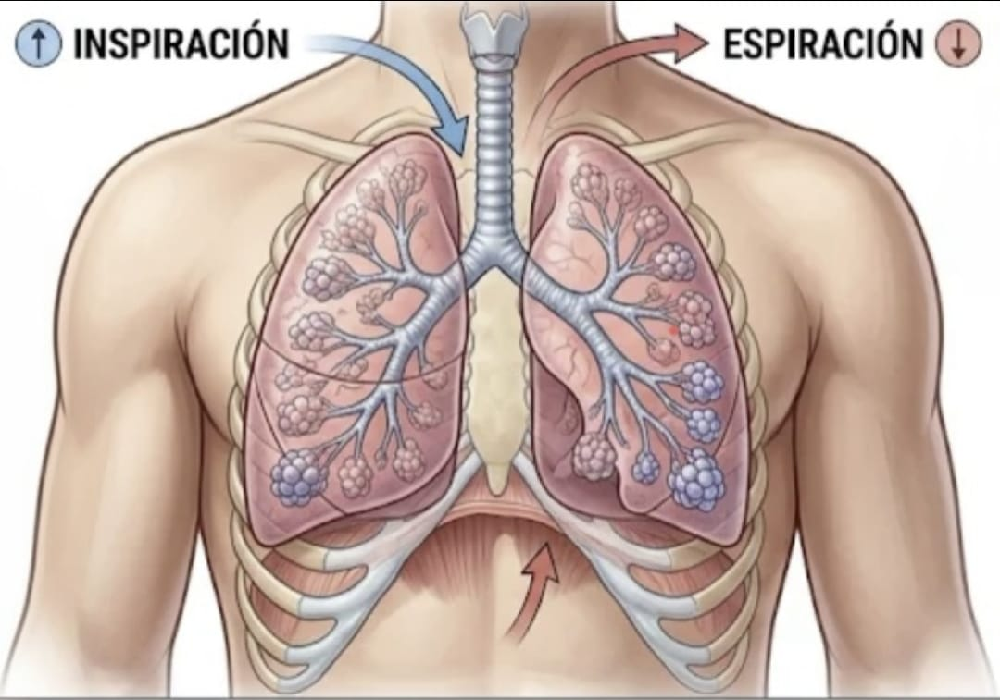

Resumen e Introducción
Resumen e Introducción
El ciclo respiratorio se analiza como un fenómeno periódico utilizando los conceptos de frecuencia, período y frecuencia angular.
La respiración es una función vital mediante la cual el organismo incorpora oxígeno y elimina dióxido de carbono.
El proceso incluye movimientos coordinados del tórax y del diafragma para permitir el ingreso y salida del aire de los pulmones.
Desde la física, la inspiración y espiración se repiten de manera sucesiva, permitiendo calcular la rapidez matemática del ciclo.
